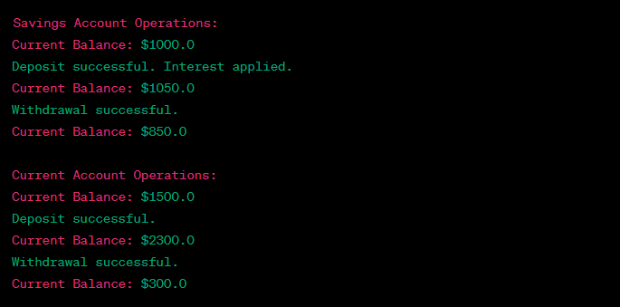

Write a Java program to create an abstract class BankAccount with abstract methods deposit() and withdraw(). Create subclasses: SavingsAccount and CurrentAccount that extend the BankAccount class and implement the respective methods to handle deposits and withdrawals for each account type.
Code:-
import java.util.Scanner;
abstract class BankAccount {
protected double balance;
// Constructor to initialize the balance
public BankAccount(double initialBalance) {
this.balance = initialBalance;
}
// Abstract methods to be implemented by subclasses
public abstract void deposit(double amount);
public abstract void withdraw(double amount);
// Method to display the current balance
public void displayBalance() {
System.out.println("Current Balance: $" + balance);
}
}
class SavingsAccount extends BankAccount {
private double interestRate;
// Constructor for SavingsAccount
public SavingsAccount(double initialBalance, double interestRate) {
super(initialBalance);
this.interestRate = interestRate;
}
@Override
public void deposit(double amount) {
balance += amount + (amount * interestRate);
System.out.println("Deposit successful. Interest applied.");
}
@Override
public void withdraw(double amount) {
if (balance >= amount) {
balance -= amount;
System.out.println("Withdrawal successful.");
} else {
System.out.println("Insufficient funds for withdrawal.");
}
}
}
class CurrentAccount extends BankAccount {
private double overdraftLimit;
// Constructor for CurrentAccount
public CurrentAccount(double initialBalance, double overdraftLimit) {
super(initialBalance);
this.overdraftLimit = overdraftLimit;
}
@Override
public void deposit(double amount) {
balance += amount;
System.out.println("Deposit successful.");
}
@Override
public void withdraw(double amount) {
if (balance + overdraftLimit >= amount) {
balance -= amount;
System.out.println("Withdrawal successful.");
} else {
System.out.println("Insufficient funds for withdrawal. Exceeds overdraft limit.");
}
}
}
public class BankAccountExample {
public static void main(String[] args) {
// Creating objects of SavingsAccount and CurrentAccount
SavingsAccount savingsAccount = new SavingsAccount(1000.0, 0.05);
CurrentAccount currentAccount = new CurrentAccount(1500.0, 500.0);
// Performing operations on SavingsAccount
System.out.println("Savings Account Operations:");
savingsAccount.displayBalance();
savingsAccount.deposit(500.0);
savingsAccount.displayBalance();
savingsAccount.withdraw(200.0);
savingsAccount.displayBalance();
// Performing operations on CurrentAccount
System.out.println("\nCurrent Account Operations:");
currentAccount.displayBalance();
currentAccount.deposit(800.0);
currentAccount.displayBalance();
currentAccount.withdraw(2000.0);
currentAccount.displayBalance();
}
}
Output:-
